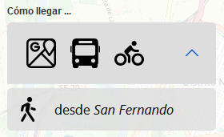
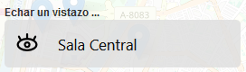

bus360 es una aplicación que muestra la ubicación y hace un recorrido virtual por las Bibliotecas de la Universidad de Sevilla.

La sección "Como llegar" contiene un desplegable con enlaces a mapas específicos para desplazarte a estas usando transporte público (Tussam/Metro/tren), privado (rutas de Google/carriles bici) y a pie desde la puerta de los edificios de la Universidad.

La sección "Echar un vistazo" hace un recorrido por las bibliotecas desde su puerta de entrada.
R E C U E R D A, cuando te sientas perdido pulsa la brújula para volver a la página principal
Algunos apuntes sobre esta aplicación:
El Servicio de Audiovisuales de la Universidad de Sevilla nos ha prestado una cámara "Insta360 one R" con la que hemos realizado todas las fotos.
El mapa de portada es una implementación de Open Street Maps y de la librería leaflet creada por Volodymyr Agafonkin.
Los recorridos 360º son una implementación del software Pannellum programado por Matthew Petroff.
Ha sido realizada por los becarios de informática de la Biblioteca tecnibus24 y por personal de la sección:
- Álvaro Carmona Núñez (líder del proyecto)
- Gonzalo Martínez Fernández
- Patricia Serrano Angorilla
- Javier Escudero Infante
Esperamos que disfrutes usando esta aplicación tanto como nosotros lo hemos hecho al hacerla para tí.

 Salas de Trabajo en grupo
Salas de Trabajo en grupo
 Recargar
Recargar